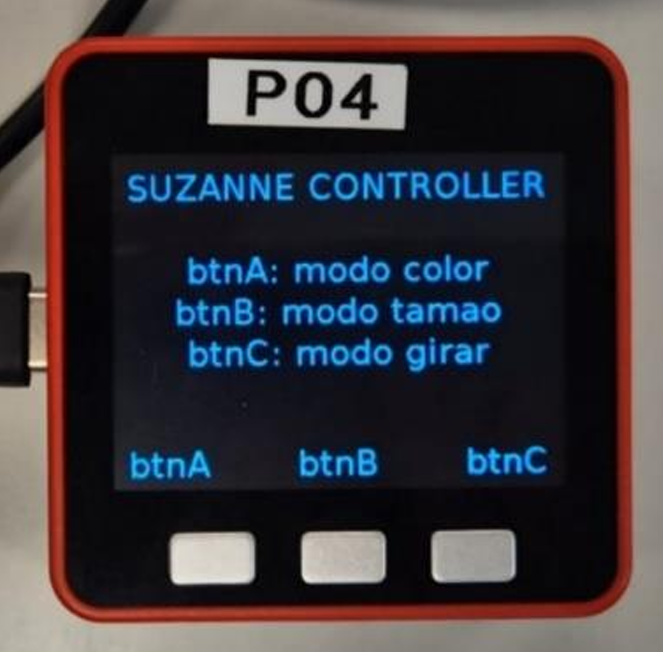
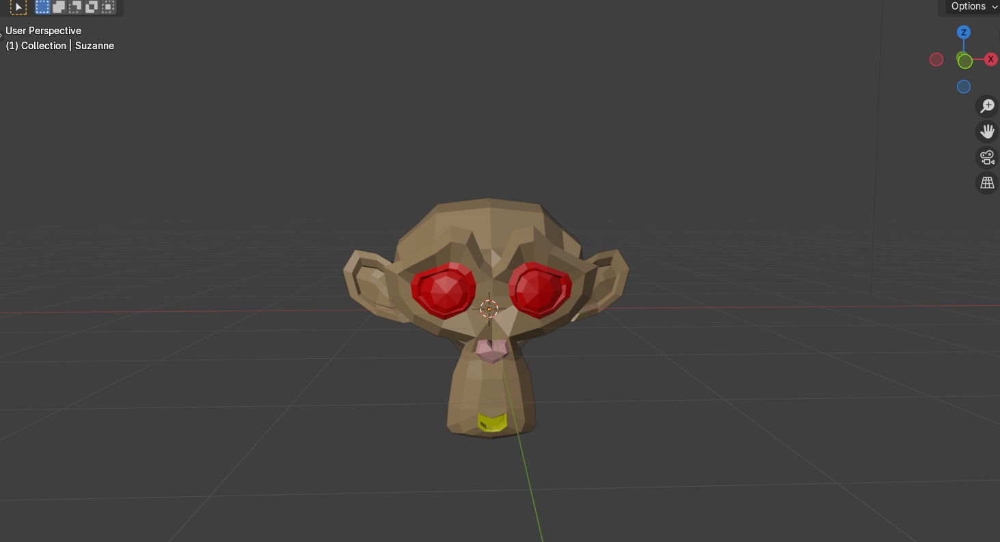
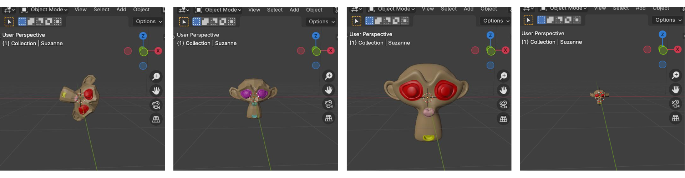
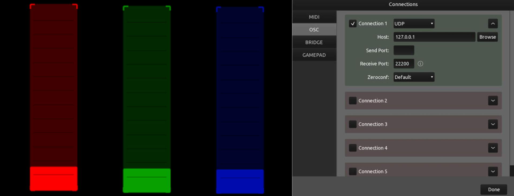

Blender Object Controller
with M5Stack & OSC
A hardware-software interactive system that uses the M5Stack-FIRE's gyroscope and physical buttons to control a Blender 3D object in real time. Tilting the device changes the object's colour, size, or rotation - streamed live over OSC, with TouchOSC acting as a visual feedback dashboard.
Overview
Controlling 3D space with a physical device
The project was inspired by character customisation screens in video games - that moment before you start playing where you adjust your character's appearance in real time. The goal was to build a reduced but functional version of that concept: a physical controller that lets you modify a 3D object without ever touching the computer.
The M5Stack-FIRE acts as the controller. Its three buttons select the active mode (colour, size, or rotation), and its built-in IMU gyroscope (yaw, pitch, roll) drives the transformation continuously. Messages are sent over UDP via OSC to Blender, which runs a Python listener script using the NodeOSC add-on. A TouchOSC interface on the same machine visualises the incoming values in real time.
Hardware
M5Stack-FIRE
Visualisation
TouchOSC
3D Engine
Blender + NodeOSC
Component - M5Stack
The physical controller
The M5Stack-FIRE runs a MicroPython script connecting to a local Wi-Fi network and opening a UDP socket. Three physical buttons select the active mode; once a mode is active, the IMU's gyroscope streams values continuously at 10 Hz.

The device screen shows the active mode for each button. A /reset message fires
automatically every time a button is pressed, returning the Blender object to its
default state before applying new transformations.
Button A - Colour mode
Activates colour mode. The gyroscope's yaw axis drives dynamic colour changes on Blender's Suzanne object. Sends /color OSC messages with the raw yaw value, plus a normalised (0–1) version to TouchOSC.
Button B - Size mode
Activates size mode. The roll axis scales the object up or down. At larger scales, a Subdivision Surface modifier is automatically added to smooth the mesh; it is removed when the object shrinks below baseline. Sends /size.
Button C - Rotation mode
Activates rotation mode. The pitch axis rotates the object on its Y axis in real time. Sends /rotate. Smooth, continuous rotation follows the physical tilt of the device.
Gyroscope normalisation
Raw yaw, pitch and roll values (spanning negative to positive ranges) are normalised to a 0–1 interval before being forwarded to TouchOSC. This eliminates abrupt jumps when the sign changes and keeps the fader visuals smooth.
Protocol
OSC message map
| Address | Trigger | IMU axis | Effect in Blender |
|---|---|---|---|
| /color | Button A pressed, then continuous | Yaw | Changes the colour of Suzanne's eyes, nose and mouth materials randomly based on the incoming value |
| /size | Button B pressed, then continuous | Roll | Scales the object; adds Subdivision Surface modifier when scale > 1, removes it when below |
| /rotate | Button C pressed, then continuous | Pitch | Rotates the object on the Y axis using rotation_euler |
| /reset | Any button press | - | Resets position, scale, rotation, materials and modifiers to default state |
Component - Blender
The Suzanne object
Blender runs a Python script using the NodeOSC add-on (installed manually into the Blender addons folder) to listen on a UDP port. The listener runs on a daemon thread so it doesn't block Blender's main loop. Messages are decoded and dispatched to a handler function that reads the OSC address and modifies Blender's scene accordingly.
Rather than using a plain sphere, the object is Blender's iconic Suzanne monkey
head. Multiple materials are assigned to specific face groups - body, eyes, nose,
mouth - so that the /color command only changes the facial features, not the
entire mesh. This makes the colour interaction far more expressive.
Colour mode
/color
Eyes, nose and mouth materials change colour based on the yaw value. The rest of the mesh stays untouched. Random colour components derived from the incoming float create varied, unexpected results.
Size mode
/size
Scale clamped between 0.1× and 3×. When the object grows above baseline, a Subdivision Surface modifier is created on the fly, smoothing the mesh. It is deleted automatically when the object shrinks back.
Rotation mode
/rotate
Pitch value maps directly to rotation_euler[1] (Y axis). One key lesson: Blender requires rotation_euler for programmatic rotation assignment - not rotation, which silently fails.
Reset
/reset
Restores the object to origin, default scale (1,1,1), zero rotation, original material colours, and removes any dynamically added modifiers. Fires before every mode switch to guarantee a clean starting state.

Multiple materials assigned to specific face groups. Only the eyes, nose and mouth respond to /color, preserving the base skin tone while producing a vivid visual change.

At scales above 1, a Subdivision Surface modifier is added programmatically, smoothing the geometry. Below baseline scale the modifier is removed automatically, keeping the polygonal look for small sizes.
Component - TouchOSC
Visual feedback dashboard
TouchOSC was originally planned as an intermediary between the M5Stack and Blender. After several failed attempts to make it bridge the two reliably, the role was redefined: TouchOSC became a read-only visualisation panel, receiving the same normalised OSC values the M5Stack sends to Blender.
Three vertical faders - color, size, rotate - display the live sensor
values. The connection uses UDP on localhost (127.0.0.1, port 22200); the send
port is left empty since TouchOSC only receives in this setup.

Red, green and blue faders correspond to colour, size and rotation modes. One known limitation: yaw values are unbounded and wrap around unpredictably, so the colour fader can show discontinuous jumps.
Engineering challenges
Problems encountered & how we solved them
Problem
M5Stack incompatible with the latest uosc library version from GitHub. Firmware downgrade also failed.
Solution
Used an older version of uosc provided in the course resources on PoliformaT, which was compatible with the device's MicroPython runtime.
Problem
M5Stack MicroPython does not support f-strings, causing syntax errors at runtime.
Solution
Replaced all f-strings with "{} {}".format(a, b) throughout the script.
Problem
Port conflict error in Blender: WinError 10048 - address already in use when re-running the OSC listener script.
Solution
Changed the OSC port in both the M5Stack script and the Blender listener to a free port, resolving the binding conflict.
Problem
Blender rotation assignment via suzanne.rotation = (0,0,0) silently failed - the object didn't reset.
Solution
Discovered that Blender requires suzanne.rotation_euler = (0,0,0) for Euler rotation mode. Correcting the attribute name fixed the reset and rotation behaviours.
Problem
IMU value read via private method mpu._get_ypr caused errors on the physical device.
Solution
Switched to the public property mpu.ypr, which is the correct API for reading yaw/pitch/roll on the M5Stack-FIRE.
Problem
In the physical lab environment, OSC messages didn't reach Blender because the host was still set to 127.0.0.1 (loopback only).
Solution
Changed the Blender listener host and TouchOSC host to 0.0.0.0 to accept connections on any network interface, and updated the M5Stack IP to the lab machine's IPv4 address obtained via ipconfig.
Reflection
What we learned
The biggest technical challenge was working with the OSC protocol without having completed the planned course practice on it first. That gap pushed us to explore documentation and debug the full communication stack independently - which turned out to be a more valuable learning experience than following a guided exercise.
Getting the gyroscope to stream continuously and have Blender respond fluidly was the hardest part. It required careful normalisation, choosing the right IMU axes for each mode, and accepting some inherent limitations (yaw wraps around without a clean upper bound, which made the colour fader inconsistent in TouchOSC).
The project also reinforced an important lesson about flexible planning: TouchOSC was originally designed to be a full intermediary. When that didn't work, pivoting it to a visualisation-only role was the right call - it simplified the system and made the communication more reliable.
Resources
Files & documentation
Full project report (25 pages), source files and TouchOSC layout available below.
Team
UPV - ETSI Telecomunicación · Interaction, Sensors & Transducers · 2024/25